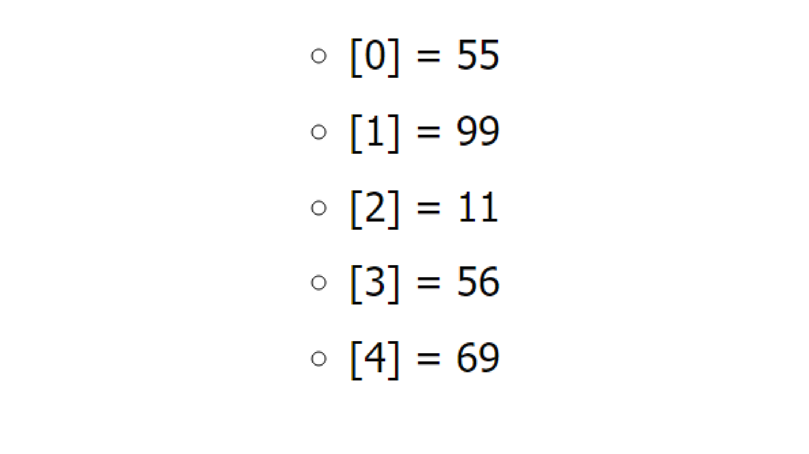
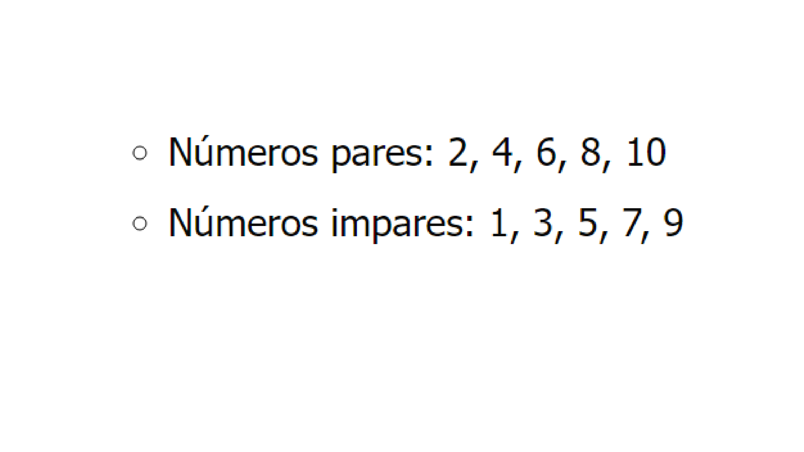
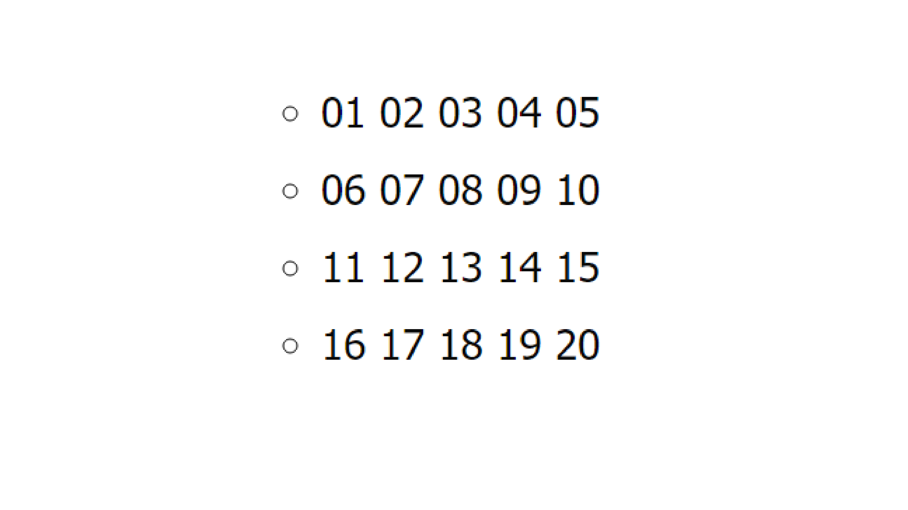
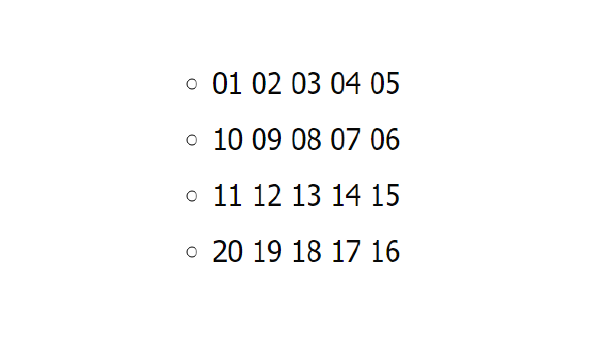
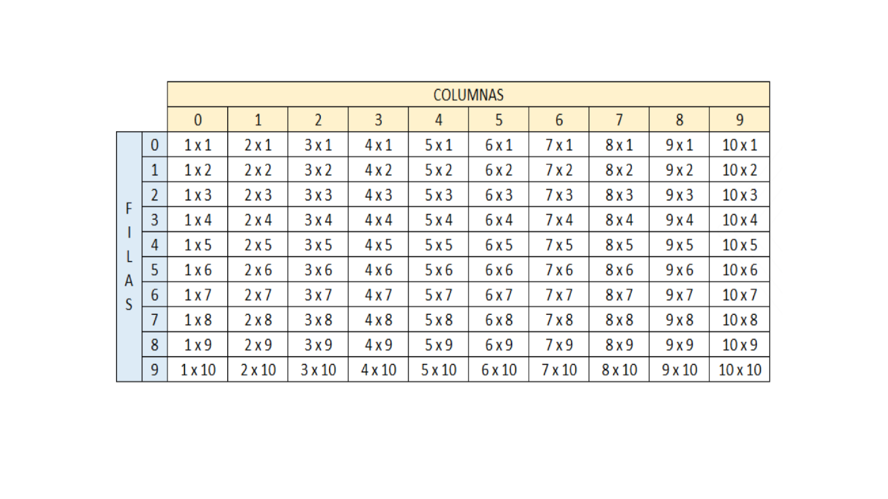

Punto 1 : Crear un vector de tipo Entero con 5 posiciones, llenarlo con información solicitada al usuario. Después de recoger toda la información, se requiere imprimir el índice de cada posición en el arreglo con su valor de la siguiente manera:
 //LLENAR ARREGLO Proceso TALLER_MATRIZ_PUNTO1 Definir indice,posicion Como Entero; Definir num,vector Como Entero; Dimension vector[5]; Para indice ← 0 Hasta 4 Con Paso 1 Hacer Escribir "Digite el valor de la posición ", indice, " del vector: "; leer num; vector[indice] ← num; FinPara Para posicion←0 Hasta 4 Con Paso 1 Hacer Escribir "[",posicion,"]"," = ", vector[posicion]; FinPara FinProcesoPunto 2 : Crear un arreglo de números enteros de 20 posiciones, el cual, debe ser llenado con números aleatorios entre 1 y 100; después de haber llenado dicho arreglo, se debe volver a recorrer utilizando un ciclo diferente al que se usó para llenarse e imprimir los números pares e impares. Ejemplo
 //LLENAR ARREGLO CON NÚMEROS AL AZAR Proceso TALLER_MATRIZ_PUNTO2 Definir i,p,m Como Entero; Definir vector,pares,impares Como Entero; Dimension vector[20]; Dimension pares[20]; Dimension impares[20]; i←0; p←0; m←0; Escribir "El Vector de Números al azar es: "; Para i← 0 Hasta 19 Con Paso 1 Hacer vector[i]←(azar(100)+1); Escribir Sin Saltar vector[i]," "; FinPara Escribir ""; Para i←0 hasta 19 Con Paso 1 Hacer si (vector[i]%2=0) Entonces pares[p]←vector[i]; p←p+1; SiNo impares[m]←vector[i]; m←m+1; FinSi FinPara Escribir "El vector de Números Pares es: "; si p > 0 Entonces Para i← 0 Hasta p-1 Con Paso 1 Hacer Escribir Sin Saltar pares[i]," "; FinPara SiNo Escribir "El vector de Números pares sin elementos: "; FinSi Escribir ""; si m > 0 Entonces Escribir "El vector de Números Impares es: "; Para i← 0 Hasta m-1 Con Paso 1 Hacer Escribir Sin Saltar impares[i]," "; FinPara SiNo Escribir "El vector de Números impares sin elementos: "; FinSi Escribir ""; FinProcesoPunto 3 : Imprimir los números primos del 1 al 1000, el resultado debe ser buscado de forma matemática.
//Números Primos del 1 al 1000 //################################# Proceso TALLER_MATRIZ_PUNTO3 Definir i,num,contador Como Entero; Escribir "Números Primos de 1 al 1000"; para num ← 1 Hasta 1000 Hacer i←1; contador←0; Mientras i ≤ num Hacer si num mod i == 0 Entonces //Mod determina si el residuo de la división entre dos números es 0 contador ← contador+1; FinSi i←i+1; FinMientras si contador == 2 Entonces Escribir Sin Saltar num," "; FinSi FinPara Escribir ""; FinProcesoPunto 4 : Dada la siguiente matriz bidimensional, el cual debe de quemar en el código
Utilizando el conocimiento adquirido, a excepción de hacerlo de forma manual, imprima la siguiente matriz bidimensional.
 //NUMEROS CONSECUTIVOS //############################################################### Proceso TALLER_MATRIZ_PUNTO4 Definir fila,f,c,columna,matriz,diez,co,vector, matriz2,contador, contador2 Como Entero; definir num Como Real; //Definir diez Como Caracter; //Dimension vector[5*5]; Dimension matriz[4,5]; Dimension matriz2[4,5]; f←0; co←0; c←1; contador ←1; num←0; //diez<-10; //matriz2[4,4]<-0; //vector[5]<-0; //mientras contador <20 Hacer Para fila ← 0 Hasta 3 Con Paso 1 Hacer para columna ← 0 hasta 4 Con Paso 1 Hacer matriz(fila,columna) ← contador; contador←contador+1; FinPara FinPara //FinMientras diez←10; para fila ← 0 Hasta 1 Con Paso 1 Hacer para columna ← 0 Hasta 4 Con Paso 1 Hacer Escribir "0",matriz(fila,columna)," " Sin Saltar; FinPara Escribir ""; FinPara para fila ← 2 Hasta 3 Con Paso 1 Hacer para columna ← 0 Hasta 4 Con Paso 1 Hacer Escribir matriz(fila,columna)," " Sin Saltar; FinPara Escribir ""; FinPara Escribir ""; //escribir matriz(1,4); //########################################################## //mientras contador <20 Hacer Para f ← 0 Hasta 3 Hacer para co ← 0 Hasta 4 Hacer //matriz2(f,co) <- azar(10); matriz2(f,co) ← c; c←c+1; //contador<-contador+1; //Escribir matriz2(f,co); FinPara FinPara //FinMientras para f ← 0 Hasta 0 Con Paso 1 Hacer para co ← 0 Hasta 4 Con Paso 1 Hacer Escribir "0",matriz2[f,co], " " Sin Saltar; FinPara Escribir ""; FinPara para f ← 1 Hasta 1 Con Paso -1 Hacer para co ← 4 Hasta 0 Con Paso -1 Hacer Escribir "0",matriz2[f,co]," " Sin Saltar; //Escribir matriz2[1,0] sin saltar; FinPara Escribir ""; FinPara para f ← 2 Hasta 2 Con Paso 1 Hacer para co ← 0 Hasta 4 Con Paso 1 Hacer Escribir matriz2[f,co], " " Sin Saltar; FinPara Escribir ""; FinPara para f ← 3 Hasta 3 Con Paso -1 Hacer para co ← 4 Hasta 0 Con Paso -1 Hacer Escribir matriz2[f,co], " " Sin Saltar; FinPara Escribir ""; FinPara FinProcesoPunto 5 : Se debe de imprimir el siguiente cuadro
El usuario deberá insertar la fila y columna de la cual desea ver el resultado, el resultado de cada celda debe estar previamente calculado en una matriz bidimensional la cual cada resultado obedecerá a la fila y columna insertada por el usuario..
//TABLAS DE MULTIPLICACIÓN //########################################################### Proceso TALLER_MATRIZ_PUNTO5 definir FILAS,COLUMNAS como entero; definir j,i,tabla_multiplicar,tabla_columna,vector_fila,opcion como entero; opcion←0; FILAS←10; COLUMNAS←10; dimension tabla_multiplicar[11,11]; Dimension tabla_columna[10]; Dimension vector_fila[10]; llenarTabla(tabla_multiplicar, FILAS); calcularTabla(tabla_multiplicar,FILAS,COLUMNAS ); imprimirTabla(tabla_multiplicar, 10,10,tabla_columna,vector_fila); // definir contador2,z Como Entero; // contador2<-1; // Para z <- 0 Hasta 9 Con Paso 1 Hacer // //para j <- 0 hasta 9 Con Paso 1 Hacer // // tabla_columna(z) <- contador2; // contador2<-contador2+1; // finpara FinProceso SubProceso calcularTabla ( tabla_multiplicar,FILAS,COLUMNAS ) definir i,j Como entero; Para j←1 Hasta FILAS Con Paso 1 Hacer Para i←1 Hasta COLUMNAS Con Paso 1 Hacer tabla_multiplicar[i,j]←tabla_multiplicar[i,1]*tabla_multiplicar[1,j]; //tabla_multiplicar[i,j]<-i*j; FinPara FinPara FinSubProceso SubProceso llenarTabla( tabla_multiplicar, FILAS) definir contador,i como entero; contador←1; Para i←1 Hasta FILAS Con Paso 1 Hacer tabla_multiplicar[i,1]←contador; tabla_multiplicar[1,i]←contador; contador←contador+1; FinPara FinSubProceso SubProceso imprimirTabla( tabla_multiplicar, FILAS, COLUMNAS,tabla_columna,vector_fila) // definir contador,z Como Entero; // contador<-1; // Para z <- 0 Hasta 8 Con Paso 1 Hacer // //para j <- 0 hasta 4 Con Paso 1 Hacer // // tabla_columna(z) <- contador; // contador<-contador+1; // finpara Definir i,j,contador2,z,opcion Como Entero; Definir textoFilas Como Caracter; Escribir " * * * Tablas de Multilplicar * * *"; Escribir ""; Escribir " C O L U M N A S "; textoFilas←" FILAS "; contador2←1; Para z ← 0 Hasta 9 Con Paso 1 Hacer vector_fila(z) ← contador2; contador2←contador2+1; Escribir " ",vector_fila[z] Sin Saltar; FinPara Escribir ""; Escribir ""; //para FILAS<-0 Hasta 8 Hacer //Escribir Subcadena(textoFilas,filas,filas) Sin Saltar; //para j<- 0 Hasta COLUMNAS-1 con paso 1 Hacer //Escribir Subcadena(textoFilas,filas,filas) Sin Saltar; //FinPara Para j←1 Hasta 9 Con Paso 1 Hacer //escribir " "Sin Saltar; Escribir "",Subcadena(textoFilas,j,j)," ",j Sin Saltar; Para i←1 Hasta FILAS Con Paso 1 Hacer escribir " ", i,"x",j," " Sin Saltar; FinPara escribir ""; FinPara Escribir " 10" Sin Saltar; Para j←1 Hasta 10 Con Paso 1 Hacer Para i←10 Hasta 10 Con Paso 1 Hacer escribir " ", j,"x",i," " Sin Saltar; FinPara FinPara escribir ""; //FinPara //finpara //################################################################################### Escribir ""; Escribir ""; Repetir Escribir "************************************************************************************"; Escribir "Señor Usuario"; Escribir ""; Escribir "1. Consultar Resultado : "; Escribir "2. Salir del sistema : "; Leer opcion; Segun opcion Hacer 1: Escribir "Digite el Número de la COLUMNA de la Tabla de Multiplicación que desea consultar: "; Leer j; Escribir "Digite el Número de la FILA de la Tabla de Multiplicación que desea consultar: "; Leer i; Escribir "El Resultado de su consulta es: ",tabla_multiplicar[j,i]; 2: Escribir "Salir"; De Otro Modo: Escribir "La opción elegida no existe"; FinSegun Hasta Que opcion = 2 //Escribir "0000",tabla_multiplicar[1,2]; Escribir ""; FinSubProceso